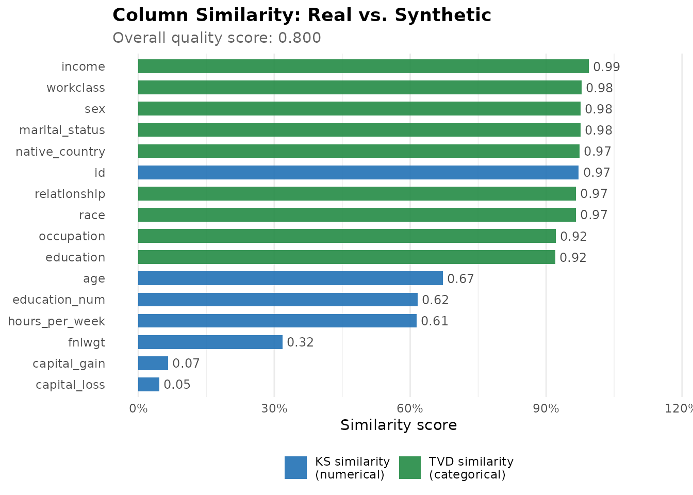
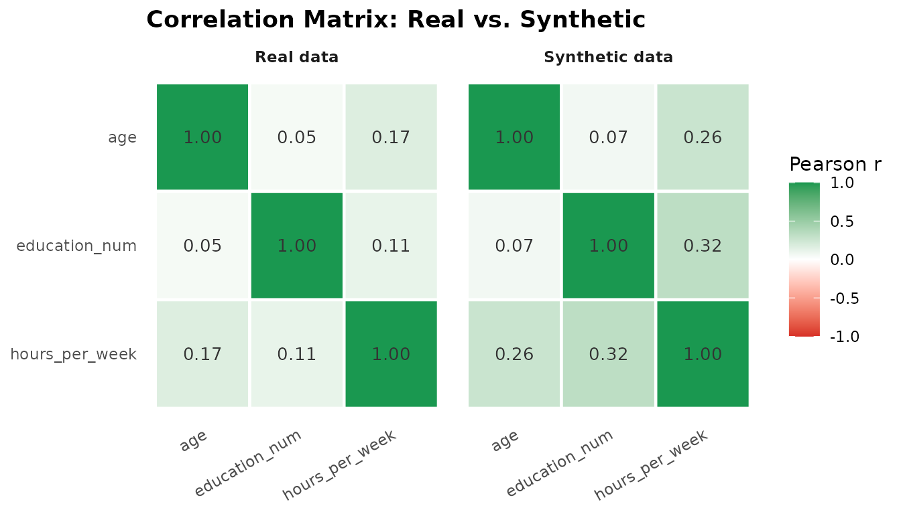
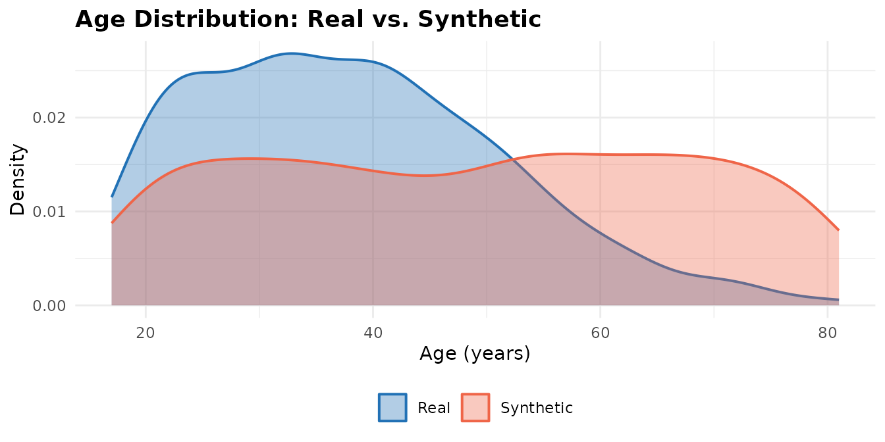
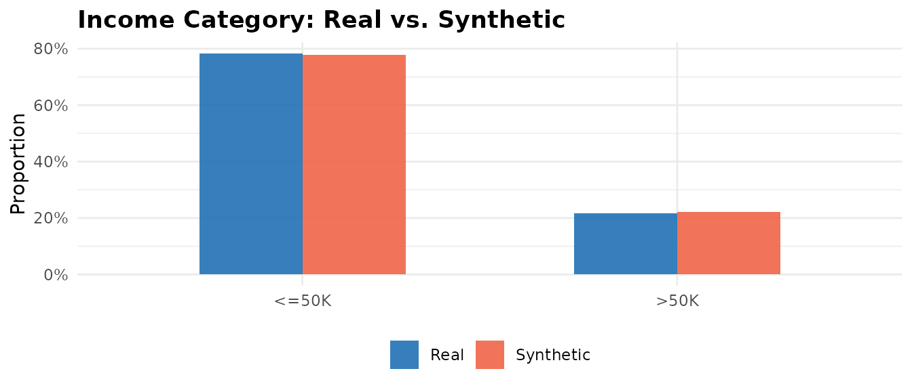
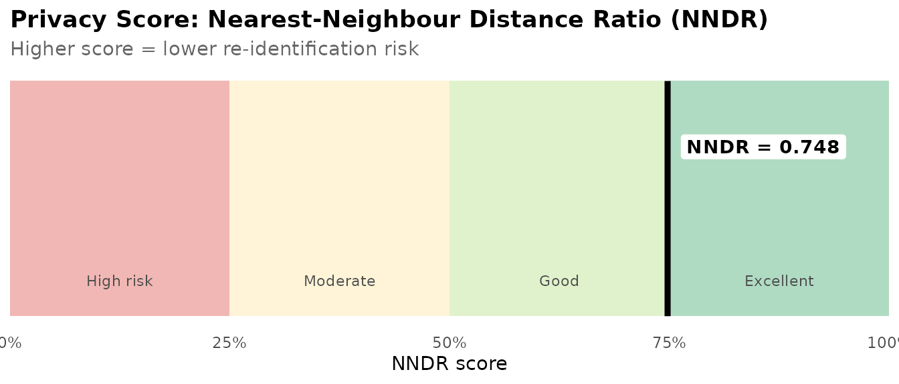

Getting Started with rsdv: A Practitioner's Guide to Synthetic Data Generation
Source:vignettes/getting-started.Rmd
getting-started.RmdIntroduction
Administrative records, survey microdata, and clinical data share a common problem: the very features that make them analytically valuable — individual-level detail, rare subgroup representation, longitudinal linkage — also make them difficult to share. Data governance procedures, informed consent agreements, and privacy regulations all impose friction between the data and the analyst. Synthetic data generation addresses this problem by learning the statistical structure of a real dataset and using that structure to generate a new dataset whose rows are entirely artificial but whose distributional properties approximate the original.
rsdv is an R implementation of the Synthetic Data Vault (SDV) framework (Patki,
Wedge, and Veeramachaneni 2016), bringing a Gaussian copula–based
synthesis workflow to native R. The package is designed for the applied
researcher who needs to generate a shareable analogue of a sensitive
dataset, evaluate how closely the synthetic version preserves the real
data’s distributions and correlation structure, and quantify the privacy
protection the synthesis affords. The workflow follows four steps:
describe the column types, fit the synthesizer, generate synthetic rows,
and evaluate the result.
The R Synthetic Data Ecosystem
The R ecosystem for synthetic data generation encompasses several methodological traditions, each suited to a different set of requirements.
Sequential imputation methods. synthpop
(Nowok, Raab, and Dibben 2016) is the most widely cited R synthesis
package. It generates synthetic variables one at a time, conditioning
each column on those already synthesised using parametric models or
classification and regression trees (CART). The sequential approach is
flexible and interpretable, and synthpop has mature support
for multiple-imputation inference and disclosure risk measurement. It is
the standard tool in official statistics applications, particularly
within UK government data infrastructure. The limitation of sequential
CART for high-dimensional mixed data is that the joint distribution is
approximated column-by-column rather than modelled as a single object;
correlations among many variables accumulate approximation error across
steps.
Adversarial methods. arf (Watson,
Blesch, Kapar, and Wright 2023) implements Adversarial Random Forests,
which partition the feature space into locally independent leaves by
iterating between a forest-based density estimator and a discriminator.
On tabular benchmarks it matches or outperforms deep generative models
while running roughly 100 times faster — a meaningful difference for
practitioners who cannot afford GPU compute. It handles mixed variable
types naturally. The package is primarily oriented toward ML researchers
rather than practitioners in regulated industries; it does not provide
metadata schemas, quality reports, or privacy metrics.
Rank-based methods. synthesizer (Van
der Loo, Statistics Netherlands) synthesises data using empirical
rank-based correlation, with a single rankcor parameter
governing the privacy-utility tradeoff. The approach is fast, handles
missing data patterns, and is appropriate for settings where a
lightweight baseline synthesis is needed. Quality metrics beyond pMSE
are not built in.
Disclosure control suites. sdcMicro
(Templ, Kowarik, and Meindl 2015) is a comprehensive toolkit for
statistical disclosure control, covering suppression, perturbation,
microaggregation, and synthesis within a unified framework used by
national statistical offices globally. Synthesis in
sdcMicro is one method among many rather than the primary
product; the workflow is designed around disclosure risk assessment and
perturbation pipelines rather than generative modeling.
Copula infrastructure. The copula
package (Hofert, Kojadinovic, Mächler, and Yan) is the foundational R
library for copula families including Gaussian, t, Clayton, Gumbel,
Frank, and Joe. rsdv uses copula internally
for fitting and sampling. Packages such as heterocop
(Tomilina, Mazo, and Jaffrézic 2024) and GenOrd address the
methodologically adjacent problem of Gaussian copula estimation for
mixed discrete and continuous variables, though oriented toward network
inference and simulation respectively.
Where rsdv fits
rsdv occupies the intersection of properties no single
existing package combines: a parametric copula model for joint
distribution preservation, first-class support for mixed variable types
(continuous, categorical, boolean), an integrated quality and privacy
evaluation report, and a tidy
metadata → fit → sample → evaluate API. The disclosure
control suites (sdcMicro, synthpop) provide
privacy metrics within their own frameworks but are not designed around
generative modelling as the primary product. rsdv’s
architecture is designed so that the Gaussian copula can be replaced by
a vine copula or a deep generative model without changing the
user-facing interface, providing a clear upgrade path as analytical
requirements grow.
The Gaussian Copula: A Practitioner’s Introduction
A copula is a joint distribution that separates the behaviour of each individual variable from the way variables depend on one another. Sklar’s theorem (Sklar 1959) guarantees that any multivariate distribution can be written as a copula applied to its marginal CDFs. For synthesis, this decomposition is useful: we can estimate the dependence structure from data and then recombine it with estimated or empirical marginal distributions to generate new observations.
The Gaussian copula models dependence through a correlation matrix. The synthesis pipeline has five stages:
1. Transform to uniform. Each observed numerical value is mapped to the interval (0, 1) using a min-max transform: u = (x − x_min) / (x_max − x_min). The endpoints are clamped slightly away from 0 and 1 to prevent infinite values in the next step.
2. Map to normal space. The uniform values are passed through the standard normal quantile function (Φ⁻¹), yielding pseudo-observations on the real line.
3. Estimate the correlation matrix. The correlation matrix of the normal-space pseudo-observations is estimated using inversion of Kendall’s τ, a rank-based method that is more stable than maximum likelihood for small samples or tied values.
4. Sample. New pseudo-observations are drawn from the fitted multivariate normal distribution.
5. Back-transform. The sampled normal values are mapped back to uniform via Φ, then rescaled to the original range.
Mixed variable types are handled outside the copula. Categorical
columns are sampled independently from their empirical marginal
distribution, preserving observed level frequencies. Boolean columns are
sampled from a Bernoulli distribution with the observed probability of
TRUE.
Missing values are handled by fitting the copula on complete cases
only. By default, rsdv records the empirical missingness
rate for each column during fitting and reinstates it at sampling time.
This approach models missingness as missing completely at random (MCAR).
Systematic missingness patterns require pre-imputation before synthesis;
see the section on missing data below.
Getting Started
Installation
# From CRAN:
install.packages("rsdv")
# Development version from GitHub:
remotes::install_github("kvenkita/rsdv")A five-line synthesis
library(rsdv)
set.seed(42)
meta <- metadata(adult_income) |>
set_column_type("age", "numerical") |>
set_column_type("education_num", "numerical") |>
set_column_type("hours_per_week", "numerical") |>
set_column_type("occupation", "categorical") |>
set_column_type("income", "categorical")
syn <- gaussian_copula_synthesizer(meta) |> fit(adult_income)
synth <- sample(syn, n = 500)
head(synth[, c("age", "education_num", "occupation", "income")])
#> age education_num occupation income
#> 1 41.29898 12.944985 Prof-specialty <=50K
#> 2 79.85225 14.614864 Machine-op-inspct <=50K
#> 3 59.08669 1.053557 Exec-managerial <=50K
#> 4 38.16550 14.974387 Adm-clerical <=50K
#> 5 36.87797 12.616693 Prof-specialty <=50K
#> 6 29.12900 1.133503 Sales <=50KDescribing Your Data: The Metadata System
Every synthesis workflow begins with a column registry that tells
rsdv what each variable represents. The registry drives
everything downstream — from how columns are transformed before fitting
to what appears in the quality report.
meta <- metadata(adult_income) |>
set_column_type("age", "numerical") |>
set_column_type("education_num", "numerical") |>
set_column_type("hours_per_week", "numerical") |>
set_column_type("occupation", "categorical") |>
set_column_type("marital_status", "categorical") |>
set_column_type("income", "categorical")
print(meta)
#> rsdv Metadata
#> Columns: 16
#> id [numerical]
#> age [numerical]
#> workclass [categorical]
#> fnlwgt [numerical]
#> education [categorical]
#> education_num [numerical]
#> marital_status [categorical]
#> occupation [categorical]
#> relationship [categorical]
#> race [categorical]
#> sex [categorical]
#> capital_gain [numerical]
#> capital_loss [numerical]
#> hours_per_week [numerical]
#> native_country [categorical]
#> income [categorical]Supported column types:
| Type | Description | Example columns |
|---|---|---|
"numerical" |
Continuous or discrete numeric; modelled through the copula | Age, income, test scores |
"categorical" |
Nominal or ordinal text or factor; sampled from empirical marginal | Occupation, education level |
"boolean" |
TRUE/FALSE; sampled from empirical
Bernoulli probability |
Flag variables, binary outcomes |
"id" |
Row identifier; excluded from synthesis | Record IDs |
"datetime" |
Date or timestamp; excluded from synthesis | Survey date |
Automatic column type detection is available: passing a data frame to
metadata() infers column types from R class. You can then
override specific types with set_column_type().
Fitting and Sampling
set.seed(42)
syn <- gaussian_copula_synthesizer(meta)
syn <- fit(syn, adult_income)
synth <- sample(syn, n = 500)The result is a data frame with 500 rows and the same six columns as
adult_income. The fit() call estimates one
transformer per registered column and, for numerical columns, fits the
Gaussian copula correlation matrix on complete cases. The
sample() call generates n synthetic rows by
drawing from the fitted copula and back-transforming each column through
its estimated marginal.
Evaluating Quality
A quality report computes three classes of similarity metrics between real and synthetic data: column-level distribution similarity, correlation structure preservation, and predictive utility.
qr <- quality_report(adult_income, synth, meta)
print(qr)
#> == rsdv Quality Report ==
#>
#> Column Similarity (KS, numerical):
#> id 0.972
#> age 0.672
#> fnlwgt 0.318
#> education_num 0.616
#> capital_gain 0.066
#> capital_loss 0.046
#> hours_per_week 0.614
#>
#> Column Similarity (TVD, categorical):
#> workclass 0.978
#> education 0.920
#> marital_status 0.976
#> occupation 0.921
#> relationship 0.966
#> race 0.966
#> sex 0.976
#> native_country 0.974
#> income 0.994
#>
#> Correlation Similarity: 0.965
#>
#> Overall Score: 0.800Column-level similarity
col_scores <- rbind(
data.frame(
column = qr$ks_scores$column,
score = qr$ks_scores$score,
type = "KS similarity\n(numerical)",
stringsAsFactors = FALSE
),
data.frame(
column = qr$tvd_scores$column,
score = qr$tvd_scores$score,
type = "TVD similarity\n(categorical)",
stringsAsFactors = FALSE
)
)
ggplot2::ggplot(
col_scores,
ggplot2::aes(x = reorder(column, score), y = score, fill = type)
) +
ggplot2::geom_col(width = 0.65, alpha = 0.9) +
ggplot2::geom_text(
ggplot2::aes(label = sprintf("%.2f", score)),
hjust = -0.15, size = 3.2, colour = "grey30"
) +
ggplot2::coord_flip() +
ggplot2::scale_y_continuous(
limits = c(0, 1.15),
labels = scales::percent_format(accuracy = 1)
) +
ggplot2::scale_fill_manual(
values = c(
"KS similarity\n(numerical)" = "#2171b5",
"TVD similarity\n(categorical)" = "#238b45"
)
) +
ggplot2::labs(
title = "Column Similarity: Real vs. Synthetic",
subtitle = sprintf("Overall quality score: %.3f", qr$overall_score),
x = NULL,
y = "Similarity score",
fill = NULL
) +
ggplot2::theme_minimal(base_size = 11) +
ggplot2::theme(
legend.position = "bottom",
panel.grid.major.y = ggplot2::element_blank(),
plot.title = ggplot2::element_text(face = "bold"),
plot.subtitle = ggplot2::element_text(colour = "grey40")
)
Kolmogorov-Smirnov (KS) similarity measures the maximum absolute difference between the empirical CDFs of a numerical column in the real and synthetic datasets, scored 0–1 (1 = identical distributions). Total variation distance (TVD) similarity is the analogous measure for categorical columns: it computes the maximum difference in probability mass between the real and synthetic frequency distributions, on the same scale.
Correlation structure
The Gaussian copula’s primary purpose is to preserve inter-column correlation. The heatmaps below compare the Pearson correlation matrices for numerical columns in the real and synthetic datasets.
num_cols <- c("age", "education_num", "hours_per_week")
cor_real <- round(cor(adult_income[, num_cols], use = "complete.obs"), 3)
cor_syn <- round(cor(synth[, num_cols], use = "complete.obs"), 3)
mat_to_long <- function(mat, source) {
nms <- colnames(mat)
data.frame(
var1 = rep(nms, each = length(nms)),
var2 = rep(nms, times = length(nms)),
value = as.vector(mat),
source = source,
stringsAsFactors = FALSE
)
}
cor_long <- rbind(
mat_to_long(cor_real, "Real data"),
mat_to_long(cor_syn, "Synthetic data")
)
cor_long$var1 <- factor(cor_long$var1, levels = rev(num_cols))
cor_long$var2 <- factor(cor_long$var2, levels = num_cols)
ggplot2::ggplot(cor_long, ggplot2::aes(var2, var1, fill = value)) +
ggplot2::geom_tile(colour = "white", linewidth = 0.8) +
ggplot2::geom_text(
ggplot2::aes(label = sprintf("%.2f", value)),
size = 3.5, colour = "grey20"
) +
ggplot2::facet_wrap(~source) +
ggplot2::scale_fill_gradient2(
low = "#d73027",
mid = "white",
high = "#1a9850",
midpoint = 0,
limits = c(-1, 1),
name = "Pearson r"
) +
ggplot2::labs(
title = "Correlation Matrix: Real vs. Synthetic",
x = NULL, y = NULL
) +
ggplot2::theme_minimal(base_size = 11) +
ggplot2::theme(
axis.text.x = ggplot2::element_text(angle = 30, hjust = 1),
strip.text = ggplot2::element_text(face = "bold"),
legend.position = "right",
plot.title = ggplot2::element_text(face = "bold"),
panel.grid = ggplot2::element_blank()
)
Marginal distributions
Overlaid density curves provide a direct visual check on how closely the synthetic marginals match the real data.
age_data <- rbind(
data.frame(value = adult_income$age, source = "Real"),
data.frame(value = synth$age, source = "Synthetic")
)
ggplot2::ggplot(age_data, ggplot2::aes(x = value, fill = source, colour = source)) +
ggplot2::geom_density(alpha = 0.35, linewidth = 0.7) +
ggplot2::scale_fill_manual(values = c("Real" = "#2171b5", "Synthetic" = "#ef6548")) +
ggplot2::scale_colour_manual(values = c("Real" = "#2171b5", "Synthetic" = "#ef6548")) +
ggplot2::labs(
title = "Age Distribution: Real vs. Synthetic",
x = "Age (years)", y = "Density",
fill = NULL, colour = NULL
) +
ggplot2::theme_minimal(base_size = 11) +
ggplot2::theme(
legend.position = "bottom",
plot.title = ggplot2::element_text(face = "bold")
)
income_real <- as.data.frame(table(adult_income$income) / nrow(adult_income))
income_synth <- as.data.frame(table(synth$income) / nrow(synth))
names(income_real) <- c("category", "proportion")
names(income_synth) <- c("category", "proportion")
income_real$source <- "Real"
income_synth$source <- "Synthetic"
income_data <- rbind(income_real, income_synth)
ggplot2::ggplot(
income_data,
ggplot2::aes(x = category, y = proportion, fill = source)
) +
ggplot2::geom_col(position = "dodge", width = 0.55, alpha = 0.9) +
ggplot2::scale_y_continuous(labels = scales::percent_format(accuracy = 1)) +
ggplot2::scale_fill_manual(values = c("Real" = "#2171b5", "Synthetic" = "#ef6548")) +
ggplot2::labs(
title = "Income Category: Real vs. Synthetic",
x = NULL, y = "Proportion", fill = NULL
) +
ggplot2::theme_minimal(base_size = 11) +
ggplot2::theme(
legend.position = "bottom",
plot.title = ggplot2::element_text(face = "bold")
)
Evaluating Privacy
pr <- privacy_report(adult_income, synth)
print(pr)
#> == rsdv Privacy Report ==
#>
#> NNDR Score (higher = more private): 0.748
score_val <- pr$nndr_score
zones <- data.frame(
xmin = c(0, 0.25, 0.50, 0.75),
xmax = c(0.25, 0.50, 0.75, 1.00),
ymid = 0.5,
label = c("High risk", "Moderate", "Good", "Excellent"),
fill = c("#d73027", "#fee090", "#a6d96a", "#1a9850"),
stringsAsFactors = FALSE
)
ggplot2::ggplot() +
ggplot2::geom_rect(
data = zones,
ggplot2::aes(xmin = xmin, xmax = xmax, ymin = 0, ymax = 1, fill = fill),
alpha = 0.35
) +
ggplot2::geom_text(
data = zones,
ggplot2::aes(x = (xmin + xmax) / 2, y = 0.15, label = label),
size = 3, colour = "grey30"
) +
ggplot2::geom_segment(
data = data.frame(x = score_val),
ggplot2::aes(x = x, xend = x, y = 0, yend = 1),
colour = "black", linewidth = 1.6
) +
ggplot2::geom_label(
data = data.frame(x = score_val),
ggplot2::aes(x = x, y = 0.72,
label = sprintf("NNDR = %.3f", x)),
hjust = -0.08, size = 3.8, fontface = "bold",
fill = "white", label.size = 0
) +
ggplot2::scale_fill_identity() +
ggplot2::scale_x_continuous(
limits = c(0, 1),
labels = scales::percent_format(accuracy = 1),
expand = c(0, 0)
) +
ggplot2::labs(
title = "Privacy Score: Nearest-Neighbour Distance Ratio (NNDR)",
subtitle = "Higher score = lower re-identification risk",
x = "NNDR score", y = NULL
) +
ggplot2::theme_minimal(base_size = 11) +
ggplot2::theme(
axis.text.y = ggplot2::element_blank(),
axis.ticks.y = ggplot2::element_blank(),
panel.grid = ggplot2::element_blank(),
plot.title = ggplot2::element_text(face = "bold"),
plot.subtitle = ggplot2::element_text(colour = "grey40")
)
The Nearest-Neighbour Distance Ratio (NNDR) score measures how close each synthetic row is to its nearest real neighbour relative to its second-nearest real neighbour. A high NNDR (approaching 1) means synthetic rows are not suspiciously close to any individual real record — the hallmark of low re-identification risk. A score below 0.5 suggests the synthesis is memorising real rows rather than learning the distribution.
For attribute disclosure risk — estimating how easily a known set of
background variables can be used to infer a sensitive value — use
attribute_disclosure_risk():
adr <- attribute_disclosure_risk(
real = adult_income,
synthetic = synth,
sensitive_col = "income",
known_cols = "age"
)
cat("Attribute disclosure risk (income given age):", round(adr, 3), "\n")
#> Attribute disclosure risk (income given age): 0.654Adding Constraints
Constraints allow you to enforce domain-knowledge rules that the
copula model alone will not guarantee. The constraint system uses
rejection sampling: rows that fail any constraint are discarded and
replaced until n valid rows are collected.
meta_constrained <- meta |>
add_constraint(
inequality_constraint("education_num", "hours_per_week", type = "lt")
)
syn_c <- gaussian_copula_synthesizer(meta_constrained) |> fit(adult_income)
synth_c <- sample(syn_c, n = 500)
# Verify: education_num < hours_per_week in all rows — should return TRUE
all(synth_c$education_num < synth_c$hours_per_week)
#> [1] TRUEAvailable constraint types:
| Function | Condition enforced |
|---|---|
equality_constraint(a, b) |
a == b row-wise |
inequality_constraint(a, b, type) |
a < b, a <= b,
a > b, or a >= b
|
fixed_combinations_constraint(cols, ref) |
Only combinations present in ref are permitted |
custom_constraint(fn) |
Arbitrary predicate f(row) → TRUE/FALSE
|
Handling Missing Data
What rsdv does by default
When a column contains NA values in the training data,
rsdv records the empirical missingness rate and reproduces
it in synthetic output by randomly assigning NA to the same
proportion of rows at sampling time. The copula is fitted on complete
cases only.
This behaviour is appropriate when data are missing completely at random (MCAR) — that is, when the probability that a value is missing is unrelated to the value itself or to any other observed variable. Survey item non-response caused by form layout errors, laboratory equipment failures on random days, or random attrition in a longitudinal study are plausible examples.
When to pre-impute
Two mechanisms produce missingness patterns that MCAR-based synthesis handles poorly:
Missing at random (MAR): the probability of missingness depends on other observed variables. Income non-response that is higher among older respondents, or laboratory values missing because a clinician ordered fewer tests for healthier patients, are MAR. The copula captures conditional distributions among observed values correctly but does not model the relationship between missingness and its predictors.
Missing not at random (MNAR): the probability of missingness depends on the unobserved value itself. High earners declining to report income, or patients with the worst prognosis dropping out of a trial, are MNAR. No synthesis method fully recovers from MNAR without auxiliary information.
For MAR data, pre-imputation before synthesis is recommended:
# Pre-impute systematically missing data before synthesis
library(mice)
imputed <- complete(mice(your_data, m = 1, printFlag = FALSE))
syn <- gaussian_copula_synthesizer(meta) |> fit(imputed) |> sample(n = 500)The missRanger package provides a fast random
forest–based alternative suitable for larger datasets.
Considerations and Caveats
Sample size. Gaussian copula estimation is stable for datasets with at least a few dozen rows per numerical dimension. The package uses Kendall’s τ–based correlation estimation, which is more robust than maximum likelihood for small samples, but correlation estimates become noisy when the number of rows is small relative to the number of numerical columns. A dataset with 3 numerical columns and 100 rows is well-conditioned; the same 100 rows with 15 numerical columns is not.
High-cardinality categorical columns. When a
categorical column has more unique levels than the synthetic sample
size, some levels will be absent from the synthetic output. This is
expected sampling behaviour. If level coverage matters, increase
n or aggregate rare levels before synthesis.
Unsupported column types. Columns typed as
"id" or "datetime" are excluded from synthesis
and will not appear in synthetic output. fit() emits a
warning listing excluded columns. A common workaround is to convert date
variables to numeric before synthesis and convert them back
afterward.
The Gaussian copula assumes elliptical (roughly symmetric) dependence. It will underrepresent tail dependence — situations where extreme values in one variable coincide with extreme values in another, which is common in financial returns, insurance claims, and natural disaster data. For heavy-tailed dependence structures, a t-copula or vine copula extension is more appropriate.
The current implementation samples categorical columns independently from their marginal distributions. Associations between two categorical columns — for example, between occupation and education level — are not preserved. Researchers for whom these associations are substantively important should treat the TVD scores carefully and consider whether the synthesis is fit for their purpose.
Synthesis reduces re-identification risk but does not eliminate it.
The NNDR and attribute disclosure risk metrics in rsdv
provide quantitative estimates of residual risk. Use the built-in
privacy report as a starting point, and consult your institution’s data
governance office for a formal privacy impact assessment in regulated
environments.
Citation
If you use rsdv in published research, please cite the
package:
@software{Venkitasubramanian2026rsdv,
author = {Venkitasubramanian, Kailas},
title = {{rsdv}: Synthetic Tabular Data Generation in {R}},
year = {2026},
url = {https://github.com/kvenkita/rsdv},
note = {R package version 0.1.0}
}You can also retrieve the citation from within R:
citation("rsdv")Contact and feedback: Questions, bug reports, and feature requests are welcome at kvenkita@charlotte.edu or via the GitHub issue tracker.
Copyright © 2026 Kailas Venkitasubramanian. Released under the MIT License.
References
Hofert, M., Kojadinovic, I., Mächler, M., and Yan, J. (2018).
Elements of Copula Modeling with R. Springer. (See also: R
package copula, https://cran.r-project.org/package=copula.)
Nowok, B., Raab, G. M., and Dibben, C. (2016). synthpop: Bespoke creation of synthetic data in R. Journal of Statistical Software, 74(11), 1–26. DOI:10.18637/jss.v074.i11. https://www.jstatsoft.org/article/view/v074i11.
Patki, N., Wedge, R., and Veeramachaneni, K. (2016). The synthetic data vault. IEEE International Symposium on Data Science and Advanced Analytics (DSAA), 399–410. DOI:10.1109/DSAA.2016.49. https://ieeexplore.ieee.org/document/7796926/.
Raab, G. M., Nowok, B., and Dibben, C. (2024). Practical privacy metrics for synthetic data. arXiv:2406.16826. https://arxiv.org/abs/2406.16826.
Sklar, A. (1959). Fonctions de répartition à n dimensions et leurs marges. Publications de l’Institut de Statistique de l’Université de Paris, 8, 229–231.
Templ, M., Kowarik, A., and Meindl, B. (2015). Statistical disclosure control for micro-data using the R package sdcMicro. Journal of Statistical Software, 67(4), 1–36. DOI:10.18637/jss.v067.i04.
Tomilina, G., Mazo, G., and Jaffrézic, F. (2024). A semi-parametric Gaussian copula model for heterogeneous network inference: an application to multi-omics data. HAL preprint hal-04847648. https://hal.inrae.fr/hal-04847648.
Watson, D. S., Blesch, K., Kapar, J., and Wright, M. N. (2023). Adversarial random forests for density estimation and generative modeling. Proceedings of the 26th International Conference on Artificial Intelligence and Statistics (AISTATS), PMLR 206:5357–5375. https://proceedings.mlr.press/v206/watson23a.html.